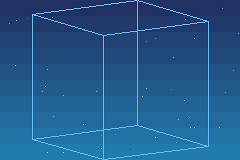
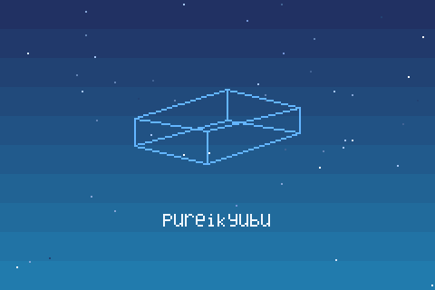
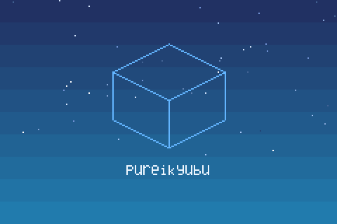
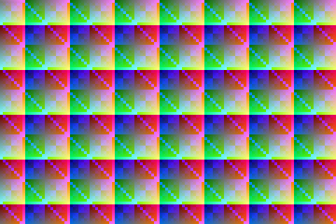
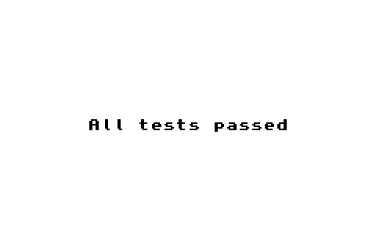
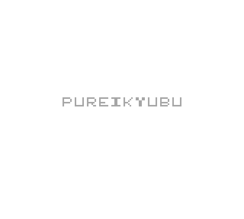

Бутром рисует логотип pureikyubu
Официальный IPL защищён авторским правом и в репозитории не распространяется. Вместо него
эмулятор собирает свободную замену прямо из исходников: анимация бутрома — это
эмулируемый ARM-код, который ассемблируется во время работы маленьким эмиттером из
src/gba/gba_armasm.cpp. Вращающийся каркасный гиперкуб складывается в плоский
куб-логотип pureikyubu, снизу выезжает надпись, после чего бутром передаёт управление
картриджу так же, как это делает настоящий BIOS.

1. Гиперкуб вращается. Каждый кадр рисует собственный растеризатор бутрома.

2. Проекция «схлопывается», каркас превращается в куб-логотип.

3. Финальный кадр: куб-логотип и надпись, затем запускается картридж.
Образ бутрома можно выгрузить для проверки вместе с листингом ассемблера:
gba_bench --dump-bootrom bootrom.bin.
Как запускать
GBA — это режим того же самого исполняемого файла. Картридж выбирает режим по расширению, а без картриджа бутром запускает свой SIO-драйвер — именно это и нужно режиму «GBA Link».
| Команда | Что делает |
|---|---|
pureikyubu --gba game.gba | Запустить картридж: сначала анимация бутрома, затем игра. |
pureikyubu --gba | Без картриджа: работает SIO-драйвер бутрома. |
pureikyubu game.gba | То же, что --gba: режим определяется расширением. |
pureikyubu --gba --gba-bios bios.bin | Использовать настоящий BIOS (16 КБайт) вместо бутрома. |
pureikyubu --gba --no-gba-bootrom | Пропустить BIOS и запустить картридж напрямую. |
pureikyubu --gba-link | Инициализировать линк-порт даже при загруженном картридже. |
Окно, звук и ввод — на SDL2. Раскладка клавиатуры и геймпада, масштаб, частота
дискретизации и параметры линка хранятся в build/Data/GBASettings.json;
повреждённый файл отвергается с сообщением, и берутся встроенные значения по умолчанию.
Харнесс запускает картридж, который собирает сам
У ядра GBA нет зависимостей от SDL, OpenGL и ImGui, поэтому у него свой харнесс
(testing/gba_bench): юнит-тесты, безоконный запуск ROM, хеши кадров, выгрузка
кадров в PNG, замер скорости и проверка линка, в которой два экземпляра соединяются друг с
другом. Демо-картридж на картинке выше собирается во время работы тем же эмиттером, что и
бутром, — это настоящая ARM-программа в настоящем образе картриджа с настоящим заголовком,
поэтому одна команда проверяет всю машину (процессор, картридж, экран, таймеры, синхронизацию
по VCOUNT).

testing/gba_bench/check.sh --demo --frames 120 --png /tmp/demo
testing/gba_bench/check.sh --bootrom --frames 300 --png /tmp/shots
testing/gba_bench/check.sh --run game.gba --frames 600 --benchПубличные тестовые ROM
jsmolka/gba-tests — набор тестовых ROM для GBA под лицензией MIT. В
репозиторий они не входят (это чужие сборки); небольшой скрипт их скачивает, после чего
харнесс запускает их как обычный картридж. Это настоящая сквозная проверка, потому что
результаты тесты показывают прямо на экране: наборы для памяти, ARM и Thumb
сообщают «All tests passed», и именно они нашли ошибку зеркалирования VRAM,
правила байтовых операций с видеопамятью и правило флага переноса при сдвиге на 0,
заданном регистром.

testing/gba_bench/get_test_roms.sh
testing/gba_bench/check.sh --run testing/gba_bench/roms/memory.gba --frames 200
testing/gba_bench/check.sh --run testing/gba_bench/roms/arm.gba --frames 200Режим Game Boy
GBA умеет запускать картриджи Game Boy только потому, что внутри консоли живёт вторая,
более старая машина. Она тоже реализована отдельным ядром (src/gba/gb_*.cpp):
процессор LR35902, экран DMG/CGB с палитрами и банками VRAM, четыре звуковых канала и
мапперы MBC1/2/3/5 с батарейным сохранением. У неё свой свободный бутром на 256 байт, в
котором надпись «pureikyubu» выезжает в центр экрана.

Что реализовано, а что нет
Реализовано
ARM7TDMI (ARM и Thumb, все семь режимов, исключения, HALT), карта памяти с open bus и задержками WAITCNT, экран (текстовые режимы 0-2, битмап-режимы 3-5, спрайты, окна, мозаика, смешивание, принудительный бланк), четыре таймера, четыре канала DMA включая тайминги для звуковых FIFO и захвата видео, клавиатура, контроллер прерываний, звук (четыре унаследованных канала и два канала прямого звука), последовательный порт в режимах normal/multiplayer/UART с эмулируемым линк-кабелем, картридж (ROM-only плюс SRAM, Flash и EEPROM, порт GPIO/RTC), вызовы BIOS в хосте и собственный бутром с SIO-драйвером.
Не реализовано (пока)
Шина JOY (геймпад GameCube на линк-порте) и собственный протокол загрузки Game Boy Player; звуковой драйвер BIOS и декомпрессор Хаффмана; сохранения состояния и перемотка; особенность EEPROM «последний байт — это AND старого и нового значения». Экран собирает строку целиком к началу HBlank, а не по точкам, и собственные задержки внутренней памяти не моделируются. Полный список отличий, включая все deliberate упрощения, зафиксированные тестами, — в testing/gba_bench/Readme.md.
Документация
Wiki: GBA
Как устроена машина: бутром, линк-порт, настройки, тесты и отличия.
Заметки по ядру
src/gba/Readme.md: состав файлов, спецификации, по которым они написаны, и как проходит кадр.
Тестовый харнесс
testing/gba_bench: что покрывают тесты и какие поведения железа сознательно упрощены.
Благодарности
Фиолетовая Game Boy Advance в иконке страницы — это
фотография
Evan-Amos (общественное достояние, через Wikimedia Commons); её обрезает и удаляет фон
src/res/make_gba_icon.py, а сама иконка — src/res/gba_icon.png.
{kind=link}